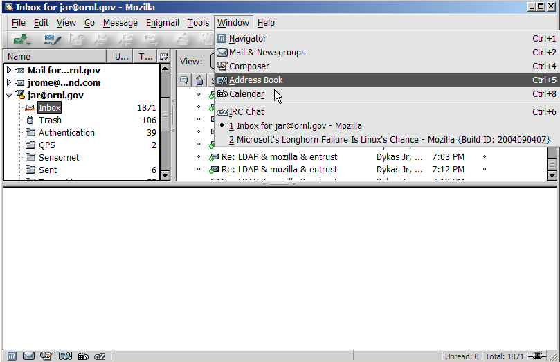
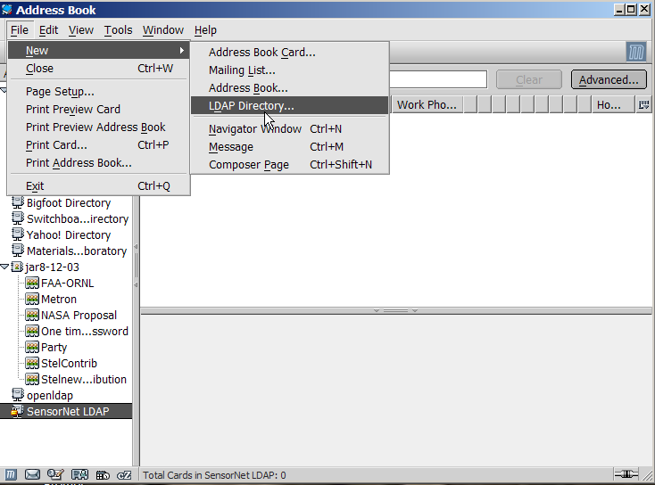
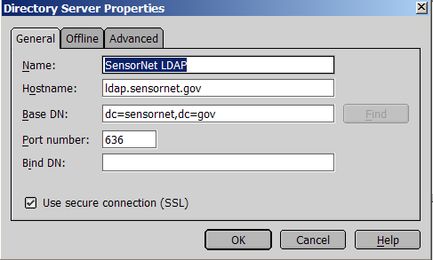
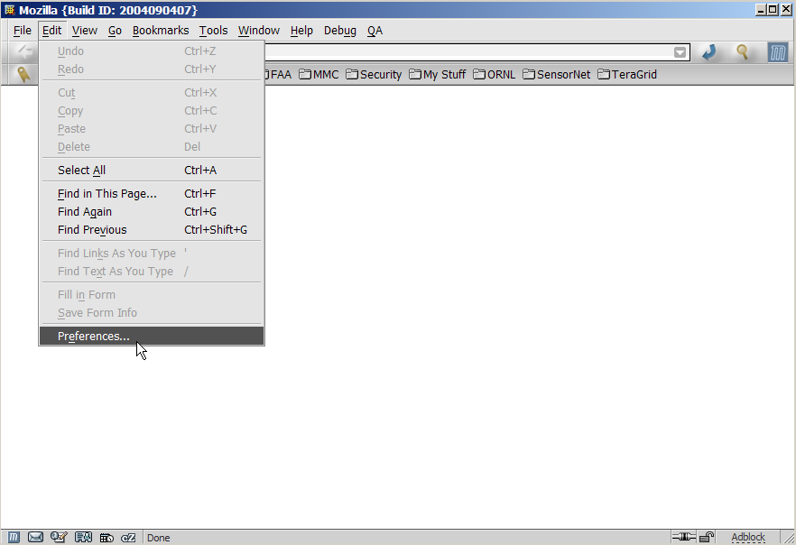
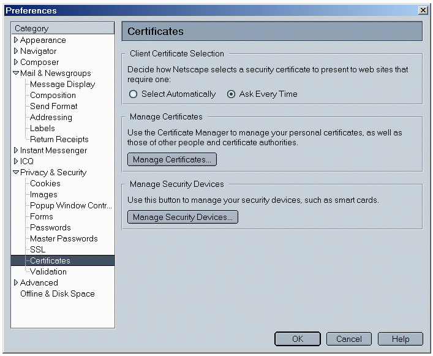
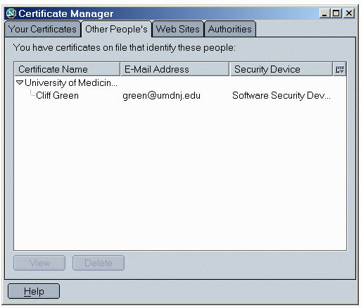
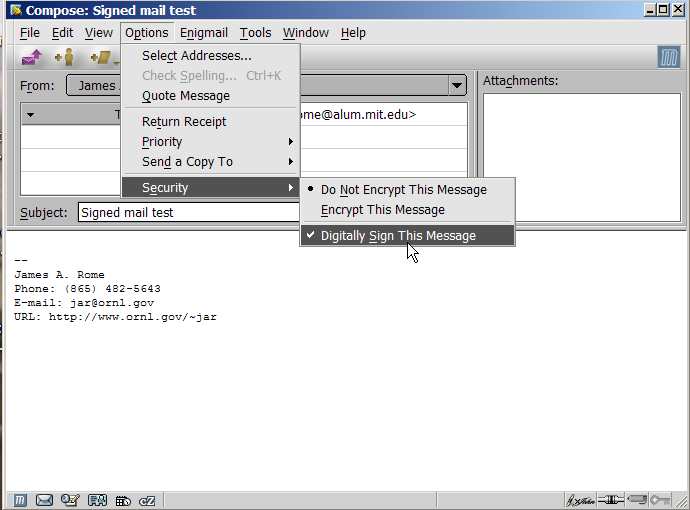

Figure 1.
Figure 2.
Figure 3.
Figure 4.

Figure 5.
| By now, you probably know that in order to send secure (specifically, encrypted) email to an individual with a SensorNet Certificate, you will need their public key (contained within their digital certificate). How do you get their public key? Well, at SensorNet, we store people's certificates in our online directory (LDAP). You can easily retrieve their certificates via the directory and place them into your computer. Listed below are the steps on how to do this. |
| First, we're going to make a new directory in Mozilla Mail's Address Book. Select "Address Book" from the "Windows" option in the menubar (see Figure 1.). |
|  Figure 1. |
| In the Address Book window, on the top menubar, click on "File", then "New", and then "LDAP Directory", as shown in Figure 2. |
|  Figure 2. |
| Type SensorNet LDAP Directory Server into the "Name" field, and ldap.sensornet.gov for "Hostname" (as illustrated in Figure 3). It is important to put in the correct base DN (distinguished name) for the directory: dc=sensornet,dc=gov with no spaces in it. Also check the Use secure connection (SSL) box and the port should change to 636.Click on "OK" when you are finished. Then click OK to close the Address Book window. |
| |
|  Figure 3. |
| You should now be back at your Mozilla Mail window. Now, click on "Edit" and then "Preferences". (see Figure 4) |
|  Figure 4. |
| In the "Preferences" window, choose "Addressing" underneath "Mail & Newsgroups" in the left pane. On the right hand side, check the box marked "Directory Server" and select "SensorNet LDAP" in the drop-down menu. Click on "OK" when you are finished. (see Figure 5) |
| Figure 5. |
| Congratulations! Your Netscape/Mozilla email program is now set up to search the SensorNet LDAP directory for people's digital certificates. You will see this in action when you go to compose secure email. |
| An Alternate Method... There is also another method of retrieving a person's digital certificate. Anyone who sends you a digitally signed email will have their public key automatically added to your list of certificates when you open their email. You can tell if the email that you've received is signed by the presence of the "Signed" icon in the upper right-hand corner of the email. (See Figure 6) |
| Figure 6. |
| You can verify the sender's digital signature by clicking on the "Signed" icon. You'll see a verification window appear which will state that the message was digitally signed. Also, you will soon see that the sender's public key has been automatically added to your list of Other People's Certificates. (see Figure 7) |
 Figure 7. |
| From the main Netscape 7 Mail window, click on "Edit" from the top menu, then select "Preferences", and then look at the left-hand pane. Select "Privacy & Security", and then "Certificates". On the right-hand pane, click on the "Manage Certificates" button. (see Figure 8) |
|  Figure 8. |
| In the Certificate Manager window, click on the "Other People's" tab at the top. You should now see the certificate of the person who sent you a signed email appear in the "Other People's" window. This enables you to send the person encrypted email (read below for more information). (see Figure 9) |
|  Figure 9. |
| Now that you have your recipient's digital certificate in
your computer, it's very easy to send an encrypted email. Go to compose
an email as you normally would. However, before sending it, click on
the little arrow next to the "Security" button, and select "Encrypt
This Message" from the drop-down menu. (see Figure 10) Then send the email as you normally would. The recipient will then be able to decrypt the email when s/he receives it by entering the passphrase to his/her private key when prompted. |
 Figure 10. |
| Please note that if you do not have the recipient's digital certificate in your browser's database, or if their certificate cannot be retrieved from the LDAP server, you cannot send encrypted email to them. If you try, you will see an error message (shown in Figure 10a) which will notify you that you do not have the recipient's digital certificate. At this point, you may choose to either send the email un-encrypted, or cancel the message altogether. Please read the above section entitled "Retrieving Other People's Digital Certificates" if you wish to send them an encrypted email. |
 Figure 10a. |
| Digitally signing email is similar to the procedure outlined just above for sending encrypting email. The only difference is that you will have to choose "Digitally Sign This Message" from the "Security" button drop-down menu before sending your message. (see Figure 11) |
|  Figure 11. |
| When you are ready to send your digitally signed email, you will be prompted to enter the passphrase for the "bag" that holds your digital certificates (see Figure 12). You may be asked to enter your passphrase twice. After you enter it, your email will be sent, digitally signed. |
 Figure 12. |
| You can send email that is both encrypted and digitally
signed as well! To do this, you must make sure that before sending your
email, both the "Encrypt This Message" and "Digitally Sign
This Message" options from "Security" are checked (see
Figure 13). You must have already retrieved the recipient's digital
certificate onto your computer (please read the above section entitled
"Retrieving Other People's Digital Certificates" if you haven't done
so), and you will also be prompted to enter the passphrase for your
digital certificate (see Figure 12). After you have done so, the email
will be sent to the recipient encrypted and digitally signed by you! A
digital signature provides some measure of non-repudiation for the
message (assuming that your computer has not been hacked). |
 |